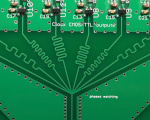

This is a “production” version of my 1PPS distribution prototype.
Now, this device supports 1PPS and Square clock signal distribution for 8 consumers.
The new device is designed with lower delays and flexible configuration in mind.
You can find the schematic and all required production files below.
The board can be powered from different sources using a flexible configuration. It’s possible to use an onboard 5 V regulator or use some external 5 V source.
All inputs are CMOS/TTL with a 5.5 V max level. 1PPS output is CMOS only. Clock outputs can be configured for CMOS or TTL.
The heart of the 1PPS distribution is SN74LVTH541DW. Also, there is AUX TTL output. This can be useful to clock some additional devices.
The square clock distribution circuit is built around SN74LVC1G07 buffers, well-known since the 1PPS prototype.
For readability, the schematic of the device was split into two parts.
Power supply and 1PPS distribution:
 Click on the image to get the full resolution
Click on the image to get the full resolution
You can find 4 jumpers there.
JP9 is used to select the onboard 5 V linear regulator or external power source. Please note that the external power source should provide stable 5.1 V max in the second variant case.
JP8 is used to select Clock outputs level – CMOS or TTL.
JP2 and JP3 are used to configure SN74LVTH541 output. The default running position is 2-3. Resistor R3 is used to limit the maximum output current in the Hi-Z state. Please check the datasheet for details.
LED1 shows the 1PPS activity.
Square clock distribution:
 Click on the image to get the full resolution
Click on the image to get the full resolution
The input resistor R2 is optional and not installed on my board. You can use this resistor when the specific load resistance is required.
There are 0-ohm resistors on outputs. This is an additional configuration option. You can install here real current-limiting resistor when it’s required. Or quickly disable the output. I decided that it’s better to have such an option.
All bypass capacitors should be installed as close as possible to the buffer ICs.
Board
The device is built on a double-sided board.
Top:
{kind=link}
And bottom:
{kind=link}
You can see the phase matching circuit on the top layer. I aligned the length of all square wave traces. This helps to achieve an acceptable level of synchronization between outputs.
Finished device:
{kind=link}
Now it’s time to do some measurements…
I’m used my GPSDO as 1PPS and 10MHz square wave source. Saleae 8-channel logic analyzer and oscilloscope.
The measured propagation delay of the 1PPS is only 4 ns:
{kind=link}
All 1PPS channels are acting synchronously:
{kind=link}
The propagation delay of the 10 MHz square clock is 10 ns. This happens due to “long” PCB lines, but this value is acceptable.
{kind=link}
Outputs disbalance is less 1 ns. Probably there are some picoseconds differences, but I can’t even measure it with my hardware:
{kind=link}
All params together
| Line | Max input V | Out type | Propagation delay | Disbalance |
|---|---|---|---|---|
| 1PPS | 5.5 | CMOS | 4 ns | < 1 ns |
| 10 MHz square | 5.5 | TTL/CMOS | 10 ns | < 1 ns |
Production files
10MHZ_1PPS_distribution_GERBER
10MHZ_1PPS_distribution_EAGLE_project
As always, thanks for reading!
Thanks for the project! Very cool! I will repeat this scheme!
Hi there. Thanks for great 10Mhz distribution board design. Did you have a particular electronics case in mind when you set the dimensions of the PCB?
Not really. I thought about optimal design and layout.
I think it’s always possible to find an appropriate case. It’s possible to use some bigger or even rack-mounted cases using extender wires from the board to the panel connectors.
Hello. Some updates: https://twitter.com/olegkutkov/status/1425397124787843081
Howdy Oleg,
Nice board. I heard awhile back that Eagle added meander lines for length matching. I guess this is what that looks like.
I have a suggestion: Dump the jellybean AMS1117-X linear regulators and use an “Ultra-Low-Noise, Low-IQ, High PSRR, LDO Regulator” that is designed for RF and telecommunication applications where cleaner power means lower phase-noise/jitter. Phase-noise/jitter is your biggest enemy when it comes to timekeeping and clock distribution. Take a look at the TPS7A20 LDO from Texas Instruments:
TPS7A20 – 300-mA, ultra-low-noise, low-IQ, low-dropout (LDO) linear regulator with high PSRR:
https://www.ti.com/product/TPS7A20
Mouser TPS7A20185PDBVR qty.-1 @ $0.49 ea., qty.-500 @ $0.245 ea., 10,658 in stock:
https://www.mouser.com/Search/Refine?Keyword=TPS7A20&Ns=Pricing|0
https://www.mouser.com/ProductDetail/Texas-Instruments/TPS7A20185PDBVR?qs=hd1VzrDQEGgQiYm%252BUIe6ow%3D%3D
Unfortunately none of the TPS7A20 packages match the AMS1117’s SOT-223 footprint, so you would either have to dead-bug the part in, or (better yet) turn the board. Or maybe if you look around you might find an ultra-low-noise LDO in a SOT-223 package that will drop right in instead of the AMS1117.
Have Fun, David in Florida
Hi David,
Thank you for your suggestion! I will take a look.
Hi Oleg
Can I buy such distributer from you?